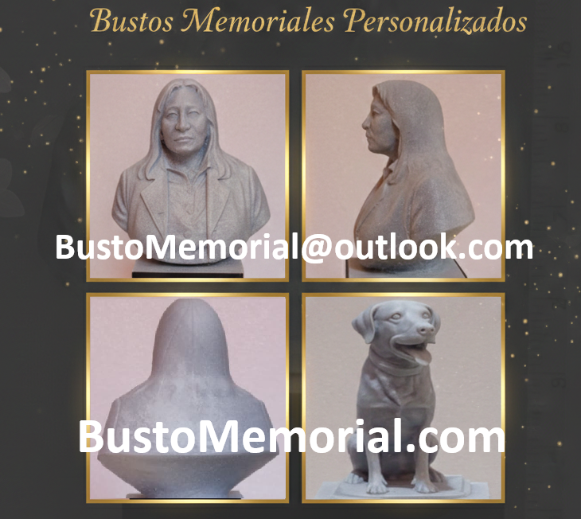

Un homenaje eterno para seres queridos y mascotas
Elaborado con resina de la más alta calidad , creamos tu pieza con respeto y dedicación, para honrar la memoria de nuestros seres queridos

El proceso es sencillo:
Comparte con nosotros las fotografías de la persona o mascota